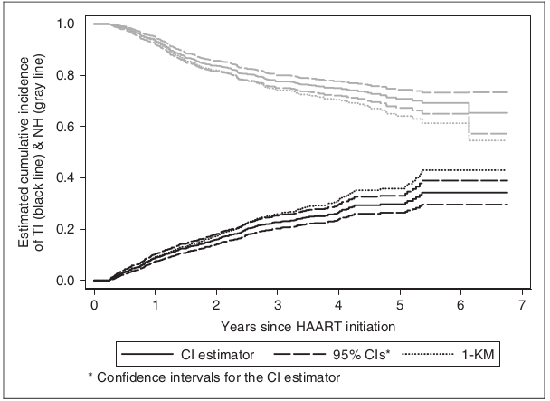
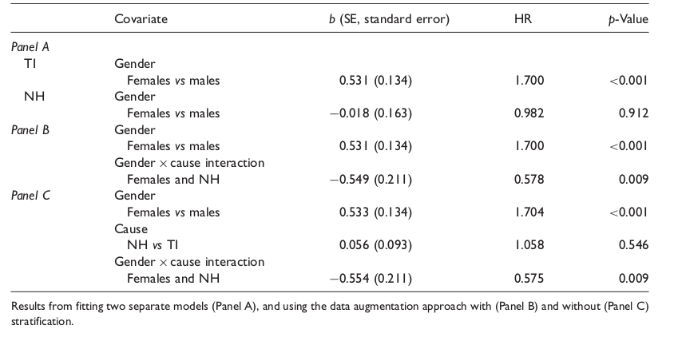
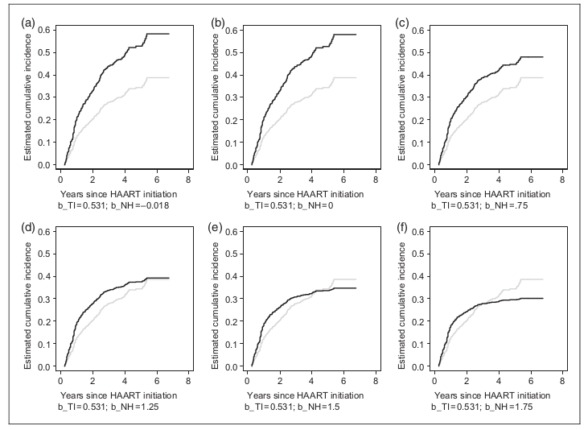
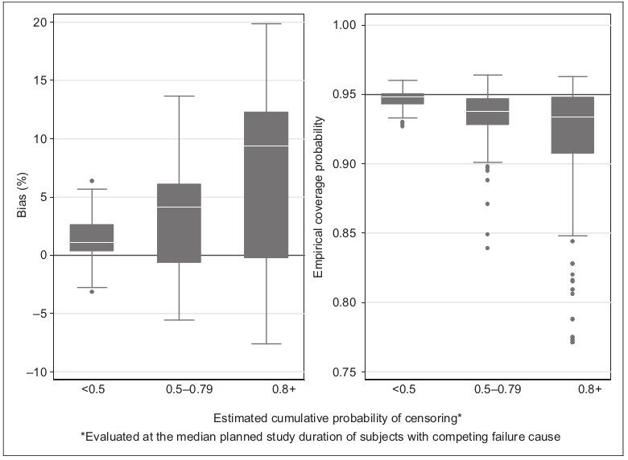
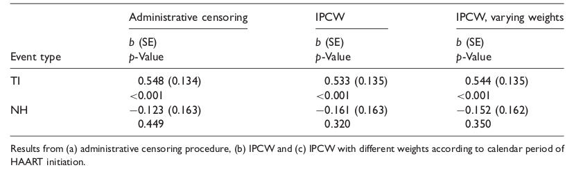

Practical methods for competing risks data
A review
Beatriz Lima Silveira
Felipe Mancini Ramos
Universidade Federal de Minas Gerais
Tópicos
- Introdução
- Conceitos básicos de Análise de Sobrevivência
- Cause-Specific Hazard
- Estimação da Incidência Cumulativa (CIF)
- Modelo de Cox para hazards específicos por causa
- Modelo de Subdistribuição de Riscos
- Análise de sensibilidade
- Aplicação: Base de Dados CASCADE
- Referências
Introdução
Em análise de sobrevivência, o interesse está no tempo até a ocorrência de um evento, sendo o arcabouço teórico tradicional desenvolvido considerando um unico evento. Entretanto, em muitos cenários reais, os indivíduos estão sujeitos a múltiplos eventos concorrentes, denominados riscos competitivos. Abordagens tradicionais para riscos competitivos buscavam estimar o tempo até um evento específico em um cenário hipotético sem os eventos concorrentes, exigindo pressupostos fortes e não verificáveis. Em contraste, métodos modernos concentram-se em quantidades diretamente estimáveis a partir dos dados observados, como as cause-especific hazards (taxas de riscos específicos por causa) e a cumulative incidence estimation (Incidências cumulativas de estimação). Esta apresentação revisa os métodos mais modernos para análise de riscos competitivos apresentados no artigo “Practical methods for competing risks data: A review” de Giorgos Bakoyannis e Giota Touloumi, com foco em modelos do tipo Cox, aplicados nos dados do estudo CASCADE sobre interrupção e troca de terapia antirretroviral em indivíduos infectados pelo HIV.
Análise de Sobrevivência
Estuda o tempo até a ocorrência de um evento de interesse (tempo de falha).
- Tempo até a morte.
- Tempo até a recidica de uma doença.
- Tempo até a interrupção de um tratamento.
Abranje uma vasta amplitude de áreas. Engenheiros estudam a confiabilidade de uma estrutura, sociólogos investigam tempo entre marcos sociais0 cíclicos, economistas concentram em tempo de promoção e o judiciário se atenta a tempo de reincidência do crime após liberação.
Complexidades
- Tempos de Sobrevivência são não negativos e geralmente assimétricos.
- Experimentos de tempo de vida são muito suscetíveis a casos de censura.
Análise de Sobrevivência
Censura
- Definimos como censura uma observação parcial do tempo de falha, e ela pode ocorrer por uma infinidade de fatores.
- Fim do tempo previsto para o experimento.
- Perda de acompanhamento do indivíduo.
- Coleta ineficaz dos dados.
- O poder de lidar com essas observações parciais, além da plétora de aplicações, faz da análise de sobrevivência uma das áreas mais citadas da estatística.
Análise de Sobrevivência
Funções de Interesse
Seja T uma variável aleatória contínua representando o tempo até a ocorrência de um evento de interesse.
A função de sobrevivência de T fornece a probabilidade que um indivíduo sobreviva após um dado tempo t: \[ S(t) = P(T > t) \]
A função taxa de falha de T, que para cada momento t corresponde a taxa de falha instantânea naquele momento: \[ h(t) = lim_{\Delta t \rightarrow 0} \frac{P(t < T < t + \Delta t | T > t)}{\Delta t}\]
Análise de Sobrevivência
Funções de Interesse
- A função taxa de falha acumulada, dada por: \[ H(t) = \int _0^t h(u) du \]
- A função de riscos, dada por: \[ R(t) = \frac{P(T \leq t)}{P(T > t)} = \frac{F(t)}{S(t)} \]
Análise de Sobrevivência
Funções de Interesse
É fácil mostrar que:
\[ h(t) = \frac{f(t)}{S(t)}\]
\[ f(t) = - \frac{d}{dt} S(t) \]
\[ S(t) = e^{-H(t)} \] \[ R(t) = e^{H(t)} - 1 \]
Análise de Sobrevivência
Dados de Sobrevivência
Uma base de dados para um estudo de de análise de sobrevivência é composto pelos seguintes items:
Tempo de sobrevivência observado (T).
Indicador de censura (\(\delta\)).
Covariáveis de interesse (X).
Análise de Sobrevivência
Estimador de Kaplan - Meier
Método não paramétrico de estimar a curva de sobrevivência. Dado uma amostra:
Sejam \(t_1 < t_2 < ... < t_m\) os tempos distintos ordenados de sobrevivência.
Sejam \(d_j\) o número de falhas em \(t_j\), \(j = 1,...,m\).
Sejam \(n_j\) o número de indivíduos sob risco em \(t_j\), \(j = 1,...,m\).
O estimador de Kaplan-Meier é definido como:
\[ \hat{S}(t) = \prod_{j: t_j < j}(1 - d_j/n_j) \]
- Estimador de Máxima Verossimilhança de para \(S(t)\).
- Não viciado para grandes amostras, fracamente consistente e assintonticamente Gaussiano.
Modelo de Riscos Competitivos
Dados de risco competitivos são encontrados em estudos onde os participantes estão sobre risco de 2 ou mais causas mutualmente exclusivas. Por exemplo: - Morte devido a doença crônica ou morte por outras causas naturais. - Fim de uma empresa devido a falência ou devido a aquisição da mesma. - Remoção de um curso por reprovação ou por mudança de curso.
Continuamos interessados no tempo de sobrevivência do indivíduo (T) e contínuamos lidando com as censuras (\(\delta\)) e observando covariáveis (X), mas agora trabalhamos também com uma indicadora de causa \(C\).
Primeira Abordagem
No passado, os estudos de risco competitivos buscavam inferir sobre a distribuição do tempo até uma falha por causa específica na ausência hipotética dos outros, da seguinte forma:
Dados k riscos competindo, suponha que existam \(T_1,...,T_k\) tempos de sobrevivência latentes para cada causa, então observamos apenas \(T = min\{T_k\}\)e a causa da falha (C). Para estimar a função distribuição \(T_i (t)\) para cada causa \(i = 1,...k\), podemos tratar qualquer tempo cuja causa não seja i como censura (uma observação parcial de \(T_i\)), aplicar o estimador de Kaplan-Meier para achar \(\hat{S_i}(t)\) e tomar \(\hat{F_i}(t) = 1 - \hat{S_i}(t)\).
Seguiria então que \(\hat{F}(t) = \hat{P}(T = min\{Tk\} \leq t) = \sum _{i = 1}^k \hat{F_i}(t)\).
Problema!
Nem a distribuição conjunta, nem as correspondentes distribuições marginais para as causas são identificáveis pelos dados observados sem fortes hipóteses adicionais, como por exemplo a independência desses tempos latentes.
Pior ainda, essas hipóteses não podem ser testadas, uma vez que não observamos esses tempos latentes.
Inclusive, aplicações já mostraram como o estimador Naive Kaplan Meier \(\hat{F}(t)\) produz valores maiores que um para a função de distribuição.
Este modelo estima corretamente a incidência acumulativa no caso hipotético onde falhas por riscos competitivos foram eliminados e que a taxa de falha específica para a causa não se altera após eliminar outro risco.
Cause-especific Hazard
Na abordagem moderna de riscos competitivos, o interesse concentra-se em quantidades diretamente observáveis: o tempo até a ocorrência do evento (T) e a causa associada (C).
O risco específico por causa para a causa (j) é definido como a taxa instantânea de ocorrência dessa causa entre os indivíduos que ainda não apresentaram nenhum evento:
\[
\lambda_j(t) = \lim_{h \to 0} \frac{P(t \le T < t+h,; C=j \mid T \ge t)}{h}
\]
O risco total é obtido pela soma dos riscos específicos:
\[
\lambda(t)=\sum_{j=1}^{k}\lambda_j(t)
\]
Essa relação decorre da aditividade das probabilidades para eventos mutuamente exclusivos e não requer hipóteses de independência entre os tempos de falha.
Cumulative incidence estimation
Em muitos estudos, o interesse está na probabilidade de ocorrência de uma causa específica ao longo do tempo.
A Função de Incidência Cumulativa (CIF) para a causa (j) é definida por:
\[
F_j(t)=P(T \le t,; C=j)
\]
e representa a probabilidade acumulada de falha pela causa (j) até o tempo (t), considerando explicitamente a presença dos eventos concorrentes.
A CIF pode ser expressa em função dos riscos específicos por causa:
\[
F_j(t) = \int_0^t \lambda_j(u) \exp\left( -\int_0^u \sum_{c=1}^{k}\lambda_c(w),dw \right) du
\]
Principais características
- Possui interpretação direta como probabilidade;
- Incorpora a competição entre os diferentes tipos de evento;
- É a principal ferramenta para descrever a incidência de uma causa específica em estudos com riscos competitivos.
Cumulative incidence estimation
Estimando a Cumulative Incidence Function
A CIF pode ser estimada por um estimador não paramétrico que combina os riscos específicos por causa com a probabilidade de sobrevivência global:
\[
\hat F_j(t)
=
\sum_{m:t_m\le t}
\hat\lambda_j(t_m)\hat S(t_{m-1})
\]
\[
\hat\lambda_j(t_m)=\frac{d_{jm}}{n_m}
\qquad\text{e}\qquad
\hat S(t_{m-1})
=
\prod_{i=1}^{m-1}
\left(1-\frac{d_i}{n_i}\right).
\]
onde:
- \(t_m\): m-ésimo tempo ordenado de falha;
- \(d_{jm}\): número de falhas da causa \(j\) em \(t_m\);
- \(d_m\): número total de falhas (todas as causas) em \(t_m\);
- \(n_m\): número de indivíduos em risco imediatamente antes de \(t_m\);
- \(\hat\lambda_j(t_m)\): risco específico estimado para a causa \(j\);
- \(\hat S(t_{m-1})\): estimador de Kaplan-Meier da sobrevivência global até o instante anterior.
Cumulative incidence estimation
Por que não utilizar o estimador ingênuo?
Em análises de sobrevivência sem riscos competitivos,
\[
F(t)=P(T\le t)=1-S(t),
\]
de modo que (1-S(t)) representa a probabilidade acumulada de ocorrência do evento.
Em riscos competitivos, uma prática comum era estimar a incidência da causa (j) por
\[
1-\hat S_j(t),
\]
tratando as falhas por outras causas como observações censuradas.
Essa abordagem assume implicitamente que indivíduos que falharam por outras causas ainda poderiam apresentar o evento de interesse no futuro.
Como consequência,
\[
1-\hat S_j(t)\ge \hat F_j(t),
\]
isto é, o estimador ingênuo tende a superestimar a incidência acumulada da causa (j).
Modelo de Cox
O modelo de riscos proporcionais, proposto por Cox em 1972 como uma maneira de incluir covariáveis na análise, tem a forma:
\[ h(t|X) = h_0 (t)exp(X \beta) \]
Onde: - \(h_0 (t)\) é uma função taxa de falha basal. - \(X\) é o vetor de covariáveis. - \(\beta\) é um vetor de coeficientes de regressão para serem estimados.
Modelo de Cox
O modelo ganha o nome de riscos proporcionais uma vez que dados dois elementos distintos \((x_i,x_j)\), a razão das taxas de falhas de ambos é independente do tempo:
\[ \frac{h(t|x_i)}{h(t|x_j)} = \frac{h_0 (t)exp(x_i \beta)}{h_0 (t)exp(x_j \beta)} = exp(x_i \beta - x_j \beta) \]
Modelando taxa de falhas para causas específicas
Para investigar como as covariáveis X podem afetar a taxa de falha instantânea devido a uma causa na presença de todas as outras, um método análogo ao de taxas de falha proporcionais de Cox foi proposto para o cenário de riscos competitivos:
\[\lambda_j(t,X) = \lambda_{0j}(t)exp(\beta _j X)\]
Na prática, esse modelo pode ser estimado tratando falhas de outras causas como censuras e ajustando um modelo Cox tradicional sem as fortes hipóteses discutidas antes, isto é, trabalhar isoladamente.
Modelando taxa de falhas para causas específicas
Para evitar esse trabalho isolado, foram desenvolvidos métodos de aumento de dados para modelar taxas de falha para todas as causas e testar a igualdade dos efeitos das covariáveis nos modelos de falhas diferentes.
Para isso, devemos trabalhar com os dados em um “formato longo” - Cada indivíduo deve ter k indicadoras de causa. - Cada covariável de interesse deve gerar k subvariáveis específicas a causa, de tal forma que no caso de j-ésima falha, a j-ésima subcovariável valha o valor original e todas as outras valham zero.
Modelando taxa de falhas para causas específicas
Feito isso, restam duas abordagens:
- Estratificar por causa de falha: este modelo gera estimativas idênticas a modelagem isolada.
- Incluir a causa de falha (C) como covariável: este modelo assume taxas de falha proporcionais.
Nas duas abordagens, o efeito de uma covariável no tempo de falha em cada causa pode ser estimado incluindo no modelo suas subcovariáveis correspondentes.
Também é possível incluir no modelo termos de interação da covariável com a causa de falha, para testar se o efeito da covariável é comum entre as causas. No caso afirmativo, a eficiência do modelo aumenta.
Modelo Fine and Gray
Modelar apenas as taxas de falhas instantaneas não quantifica o ganho ou perda geral que uma covariável imbui no tempo de falha, logo modelar a incidencia acumulativa pode tornar a interpretação mais relevante. Um modelo deste tipo foi sugerido por Fine and Gray.
Defina a taxa de falha de subdistribuição (subdistribution hazard) como:
\[ \lambda _j ^{sub} (t,x) = lim_{h \rightarrow 0} \frac{1}{h} P[t \leq T < t + h, C = j | T \geq t \cup (T \leq t \cap C \neq j),X] \] \[ = \frac{-d}{dt} log[1 - F_j(t,X)]\]
Note que esse não é a taxa da falha natural pois inclui no tempo t sujeitos que falharam por outras causas antes de t e não estão mais em risco.
Modelo Fine and Gray
Com essa taxa de falha, foi proposto um modelo semiparamétrico de taxa de falha proporcional:
\[ \lambda _j ^{sub} (t,x) = \lambda _{0j} ^{sub} (t,x) exp(\beta _j X) \]
Análise de Sensibilidade
O que é análise de sensibilidade?
Uma análise de sensibilidade investiga o quanto as conclusões de um modelo dependem de hipóteses assumidas durante a estimação.
Em riscos competitivos, o modelo de Fine & Gray pode ser ajustado sob diferentes mecanismos de censura:
- Censura administrativa;
- Censura aleatória (random censoring).
A questão central é:
As estimativas permanecem semelhantes quando utilizamos uma hipótese simplificadora em vez de um método mais geral?
Se os resultados mudarem pouco, o método é considerado robusto à violação da hipótese.
Análise de Sensibilidade
Qual hipótese está sendo investigada?
No modelo de Fine & Gray, a inferência é mais simples quando toda censura ocorre devido ao encerramento do estudo.
Nesse caso, para cada indivíduo:
\[
d_i = d - W_i
\]
onde:
- \(d\): duração total do estudo;
- \(W_i\): instante de entrada do indivíduo;
- \(d_i\): tempo de censura administrativa.
Entretanto, na prática podem existir perdas de seguimento antes do término do estudo.
Análise de Sensibilidade
Qual hipótese está sendo investigada?
Assim, a censura observada pode ser:
\[
\min(U_i,d_i),
\]
onde:
- \(U_i\): censura aleatória;
- \(d_i\): censura administrativa.
A análise de sensibilidade avalia o impacto de assumir apenas censura administrativa quando a censura aleatória também está presente.
Simulação
Como a sensibilidade foi avaliada?
Os autores geraram dados simulados com:
- Dois eventos competitivos;
- Um único preditor (\(x\));
- Diferentes probabilidades do evento de interesse;
- Diferentes intensidades de censura;
- Diferentes durações do estudo.
Para cada cenário foram comparadas duas abordagens:
- Modelo assumindo censura administrativa;
- Modelo utilizando IPCW (Inverse Probability of Censoring Weighting).
Simulação
Como a sensibilidade foi avaliada?
O objetivo foi verificar:
- Viés na estimativa do efeito da covariável;
- Cobertura dos intervalos de confiança;
- Condições nas quais a hipótese de censura administrativa se torna inadequada.
Se os resultados dos dois métodos forem semelhantes, a hipótese de censura administrativa pode ser considerada aceitável naquele cenário.
Simulação
Construção dos cenários
A causa de falha foi simulada por uma variável \(C \in {1,2}\), onde:
- \(C=1\): evento de interesse;
- \(C=2\): evento competitivo.
A probabilidade de ocorrência do evento de interesse foi definida por
\[
P(C=1|x) = 1-(1-p)^{\exp(0.5x)},
\]
onde:
- \(p \in {0.3,0.5,0.7}\) controla a frequência do evento de interesse;
- \(x\) representa a covariável simulada.
Foram considerados dois tipos de covariável:
- \(x \sim N(0,1)\) (contínua);
- \(x \sim Bernoulli(0.4)\) (binária).
Dessa forma, diferentes cenários apresentavam proporções distintas entre evento de interesse e evento competitivo.
Simulação
Geração dos tempos de falha
Após determinar a causa de falha, os tempos foram gerados condicionalmente à causa.
Para o evento de interesse (\(C=1\)):
\[
P(T\le t|C=1,x) = \frac{1-(1-p[1-\exp(-t)])^{\exp(0.5x)}}{1-(1-p)^{\exp(0.5x}}.
\]
Para o evento competitivo (\(C=2\)):
\[
P(T\le t|C=2,x) = 1-\exp[-\exp(\gamma x)t].
\]
O parâmetro \(\gamma \in {0.5,-0.5,-1}\) controla o efeito da covariável sobre o evento competitivo. Os autores variaram \(\gamma\) para investigar situações em que a covariável possui efeitos semelhantes ou conflitantes entre as duas causas de falha.
Simulação
Introdução da censura
A censura aleatória foi gerada por \(U_i \sim Exp(\lambda)\) com \(\lambda \in {0.2,0.25,0.5,1,2,4}\)
O instante de entrada no estudo foi gerado por \(W_i \sim U(0,1)\) e a censura administrativa foi definida como $d_i=d-W_i $ onde \(d \in {1,2,4,8}\) representa a duração total do estudo.
O tempo observado foi \[ Y_i=\min(T_i,U_i,d_i)\] Assim, a simulação permitiu avaliar simultaneamente o impacto de:
- duração do estudo;
- intensidade da censura;
- frequência do evento de interesse;
- efeito da covariável sobre o evento competitivo.
No total foram avaliados \(4 \times 6 \times 3 \times 3 \times 2 = 432\) cenários distintos.
Aplicação: Estudo CASCADE
O estudo Concerted Action on SeroConversion to AIDS and Death in Europe (CASCADE) avaliou mudanças no tratamento antirretroviral em indivíduos infectados pelo HIV.
Eventos considerados
- TI: interrupção do tratamento (treatment interruption);
- NH: troca para um novo esquema terapêutico (new HAART regimen).
Resumo da amostra
- Total de participantes: 1551;
- Interrupção do tratamento (TI): 299 (19,3%);
- Troca para novo regime (NH): 283 (18,2%);
- Nenhum dos dois eventos: 969 (62,5%).
Durante o acompanhamento ocorreram 98 óbitos, sendo 58 antes da ocorrência de TI ou NH. Para esses indivíduos, o acompanhamento foi censurado na data do óbito.
Resultados
Kaplan-Meier versus CIF
As estimativas da incidência cumulativa foram obtidas utilizando:
- o estimador apropriado da CIF;
- o estimador ingênuo baseado em Kaplan-Meier.
Incidência acumulada em 4 anos
| TI |
26,7% |
31,5% |
| NH |
25,0% |
29,5% |
Principais resultados
- O estimador baseado em Kaplan-Meier superestimou sistematicamente a incidência dos dois eventos;
- A diferença observada confirma a importância de considerar explicitamente os riscos competitivos;
- Apenas 37,5% dos pacientes experimentaram um dos dois eventos durante o acompanhamento.
Resultados
Kaplan-Meier versus CIF

Resultados
Efeito de Gênero em Interrupção ou Troca de Tratamento
Abordaremos a análise do efeito de gênero na taxa de falha instantânea através de 3 métodos:
Isolado (A): onde ajustamos um modelo para cada causa tendo gênero como covariável de interesse.
Estratificado (B): onde ajustamos o modelo simultaneamente para ambos riscos usando o aumento de dados e depois estratificamos pela variável causa de falha.
Causal (C): onde ajustamos o modelo simultaneamente para ambos riscos usando o aumento de dados e incluímos a causa de falha como covariável.
Lembre que:
As estimativas de (B) deveriam ser idênticas a de (A).
O método (C) supõe taxas de falha proporcionais.
Analisamos a interação da covariável com o tipo de falha, sabendo que um efeito comum da covariável entre os tipos de falha (interação não sig) nos garante maior eficácia.
Resultados
Efeito de Gênero em Interrupção ou Troca de Tratamento

Resultados
Efeito de Gênero em Interrupção ou Troca de Tratamento
Os três modelos concluíram efeito significativo do gênero no tempo até a interrupção do tratamento, com o risco para mulheres sendo 1.7 vezes maior que o risco para homens. Mas não houve efeito significativa no tempo até a troca de tratamento.
Como esperado, as estimativas do modelo isolado foram idênticas as estimativas do modelo estratificado (0.531).
A interação entre gênero e causa é tida como significativa, uma vez que o efeito do gênero na interrupção do tratamento é diferente do efeito na troca de tratamento.
O modelo causal não indicou diferença na taxa de falha basal para causas diferentes, nem apontou interação significativa entre gênero e causa. Um gráfico omitido pelos autores mostra as curvas de cada grupo cruzando, rejeitando a hipótese de taxas de falha proporcionais e portanto a eficácia deste modelo.
Resultados
Efeito de Gênero em Interrupção ou Troca de Tratamento
Um gráfico que mostre o efeito da covariável gênero para o risco do evento TI não servirá de muito. No cenário de riscos competitivos, a função taxa de falha e função distribuição acumulada não são relacionadas um a um, uma vez que a acumulada é uma função de todas as taxas de falhas de cada risco, e uma covariável pode afetar cada uma delas de forma diferente. Um aumento na acumulada pode vir de um efeito positivo para uma causa ou de um efeito negativo em uma causa concorrente.
Simulamos a função distribuição acumulada para interrupção de tratamento, estimada pelo modelo (A), tomando valores diferentes para a interação entre gênero e mudança de tratamento (que em nosso caso é nula). Ao aumentarmos a interação, mais mulheres sofrem mudança de tratamento e portanto não podem sofrer o risco competindo de interrupção de tratamento. Para valores maiores as curvas chegam a cruzar, mesmo as mulheres tendo risco significativamente maior de interrupção de tratamento.
Resultados
Efeito de Gênero em Interrupção ou Troca de Tratamento

Resultados
Estudo de Simulação
O estudo de simulação avaliou o impacto de assumir censura administrativa quando, na realidade, a censura era informativa.
Principais resultados
- O viés na estimativa do efeito da covariável permaneceu abaixo de 20% em todos os cenários avaliados;
- A magnitude do viés não dependeu de um único fator, mas da combinação de diferentes características do estudo;
- Os maiores vieses ocorreram em cenários com:
- alta taxa de censura;
- longo tempo de acompanhamento;
- elevada frequência do evento competitivo;
- forte efeito da covariável sobre o evento competitivo.
Os cenários mais críticos apresentaram vieses entre −7,6% e 19,9%.
Resultados
Estudo de Simulação

Resultados
Impacto da Censura Informativa
Quando a probabilidade acumulada de censura era moderada (< 50%), os resultados mostraram boa robustez:
- Viés entre −3,2% e 6,4%;
- Probabilidade de cobertura próxima ao nível nominal;
- Pequena diferença entre os métodos avaliados.
Conclusão
A análise de sensibilidade indica que assumir censura administrativa produz resultados semelhantes aos obtidos com IPCW em muitos cenários práticos.
Entretanto, diferenças relevantes podem surgir quando há:
- censura intensa;
- longo período de acompanhamento;
- forte associação entre covariáveis e eventos competitivos.
Resultados
Modelo Fine and Gray
A modelagem para a incidência acumulada usando taxas de falha de subsdistribuição proposta por Fine and Gray pode ser realizada no R através do pacte cmprsk. Repetimos a análise do efeito de gênero, desta vez na incidência acumulada, das 3 formas discutidas anteriormente:
Assumindo censura adminstrativa.
Lidando com censura aleatória através da IPCW (inverse probability of censoring weighting).
Otimizando as pesagens do IPCW de acordo com a data de início do tratamento.
Resultados
Modelo Fine and Gray

Conclusão
A análise de riscos competitivos deve se concentrar em quantidades identificáveis:
- Cause-Specific Hazard (CSH);
- Cumulative Incidence Function (CIF).
A abordagem baseada em tempos latentes de falha depende de pressupostos não testáveis e apresenta problemas de identificabilidade.
O estimador de Kaplan-Meier superestima a incidência de um evento na presença de riscos competitivos e não deve ser utilizado para esse propósito.
O modelo de Cox permite avaliar o efeito das covariáveis sobre as hazards específicas por causa.
O modelo de Fine & Gray permite modelar diretamente a incidência cumulativa.
O efeito de uma covariável sobre a hazard específica por causa pode ser diferente de seu efeito sobre a CIF.
Conclusão
- A análise pode ser afetada por:
- censura;
- covariáveis dependentes do tempo;
- causas de falha ausentes;
- truncamento à esquerda;
- violações da hipótese de riscos proporcionais.
- Os modelos semiparamétricos são amplamente utilizados por sua flexibilidade e facilidade de implementação.
Referências
BAKOYANNIS, Giorgos; TOULOUMI, Giota. Practical methods for competing risks data: A review. Statistical Methods in Medical Research, v. 21, n. 3, p. 257–272, 2012. DOI: 10.1177/0962280210394479.
COLOSIMO, Enrico Antônio; GIOLO, Suely Ruiz. Análise de sobrevivência aplicada. 2. ed. São Paulo: Blucher, 2024.
PUTTER, Hein; FIOCCO, Marta; GESKUS, Ronald B. Tutorial in biostatistics: Competing risks and multi-state models. Statistics in Medicine, v. 26, n. 11, p. 2389–2430, 2007. DOI: 10.1002/sim.2712.